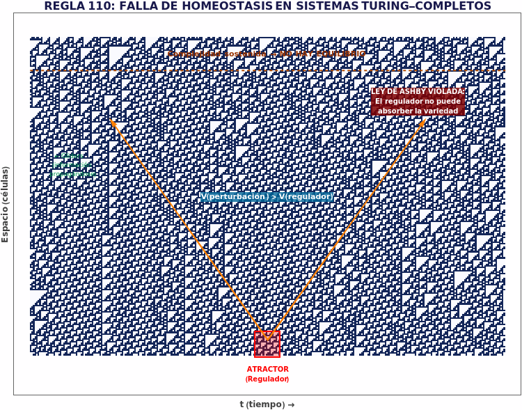
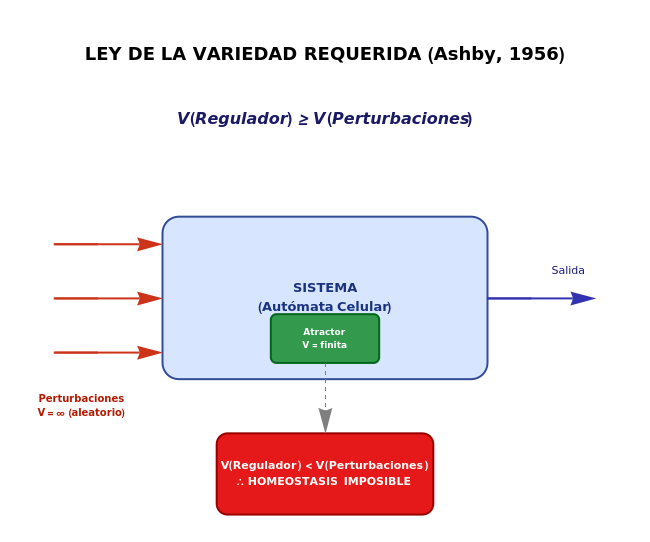
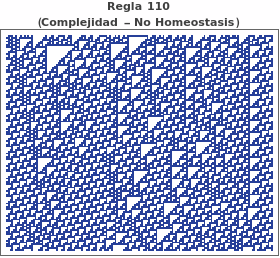
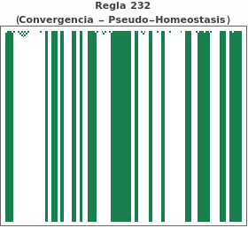
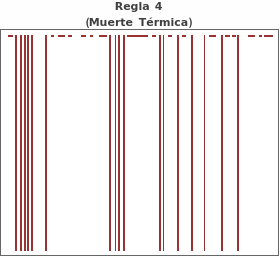
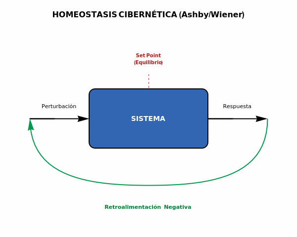

Introducción: El sueño cibernético del equilibrio
En 1948, Norbert Wiener publicó "Cybernetics: Or Control and Communication in the Animal and the Machine", estableciendo las bases de una ciencia que prometía unificar la comprensión de sistemas biológicos, mecánicos y sociales bajo un mismo paradigma: el control mediante retroalimentación.
La promesa era elegante: todo sistema que pudiera medir su desviación de un estado deseado y corregirse a sí mismo alcanzaría la homeostasis — ese equilibrio dinámico que mantiene vivo a un organismo, estable a una economía, o funcional a una máquina.
Pero, ¿qué sucede cuando un sistema es demasiado capaz? ¿Cuando su potencial computacional excede cualquier mecanismo de regulación que intentemos imponerle?
La Regla 110 de los autómatas celulares nos ofrece una respuesta inquietante.

La Ley de la Variedad Requerida
W. Ross Ashby, en su obra "An Introduction to Cybernetics" (1956), formalizó lo que hoy conocemos como la Ley de la Variedad Requerida:
"Solo la variedad puede absorber variedad."

En términos formales:
Esto significa que para que un sistema mantenga homeostasis, su mecanismo regulador debe tener al menos tantos estados posibles como las perturbaciones que intenta controlar.
Un termostato funciona porque las perturbaciones térmicas de una habitación tienen variedad limitada (temperatura sube o baja), y el regulador (encender/apagar calefacción) puede manejarlas.
Pero, ¿qué ocurre cuando las perturbaciones tienen variedad infinita?
La Regla 110: Computación Universal en Una Dimensión
Stephen Wolfram clasificó los autómatas celulares elementales en cuatro clases. La Clase IV —donde habita la Regla 110— exhibe comportamiento "al borde del caos": ni completamente ordenado, ni completamente aleatorio.
En 2004, Matthew Cook demostró que la Regla 110 es Turing-completa. Esto significa que puede simular cualquier computación posible — incluyendo, paradójicamente, intentar regularse a sí misma.
El Experimento
Construimos un sistema con:
- Regla 110 como dinámica evolutiva
- Un "atractor" central: un bloque de 10 células activas diseñado para actuar como regulador
- Perturbaciones aleatorias: condiciones iniciales random a ambos lados
(* Definición del sistema: Regla 110 (Clase IV) *)
rule = 110;
steps = 200;
size = 400;
(* Generación de una semilla con un atractor central *)
SeedRandom[42];
seed = Join[
RandomInteger[1, IntegerPart[size/2 - 5]],
{1, 1, 1, 1, 1, 1, 1, 1, 1, 1}, (* Atractor central *)
RandomInteger[1, IntegerPart[size/2 - 5]]
];
(* Evolución del Autómata Celular *)
ca = CellularAutomaton[rule, seed, steps];
(* Visualización *)
ArrayPlot[ca,
ColorRules -> {0 -> White, 1 -> Black},
Frame -> True]Hipótesis cibernética: Si el atractor tiene suficiente "variedad reguladora", debería absorber las perturbaciones y el sistema convergería a un estado estable.
Resultado: Falla total de homeostasis.
Anatomía de una Falla Homeostática
Comparemos tres escenarios diferentes:



| Sistema | Comportamiento | Variedad | Homeostasis |
|---|---|---|---|
| Regla 110 | Complejidad sostenida | Infinita | Imposible |
| Regla 232 | Convergencia a bloques | Reducida | Pseudo-equilibrio |
| Regla 4 | Colapso total | Cero | "Muerte térmica" |
¿Por qué falla la Regla 110?
- Generación de gliders: Las perturbaciones no se "disipan" — se transforman en estructuras móviles (gliders) que propagan información a través del espacio.
- Colisiones computacionales: Cuando los gliders colisionan, no se anulan — generan nuevas estructuras, aumentando la complejidad.
- Variedad auto-generada: El sistema no solo no absorbe variedad externa; genera variedad interna indefinidamente.
- Imposibilidad de predicción: Al ser Turing-completo, predecir el estado futuro requiere simular el sistema — no existe atajo.
La Paradoja del Regulador Universal
Aquí emerge una paradoja profunda desde la perspectiva cibernética:
Un sistema con capacidad computacional universal no puede ser regulado por ningún subsistema interno.
Para regular la Regla 110, necesitaríamos un regulador con variedad ≥ que todas las computaciones posibles. Pero tal regulador sería él mismo Turing-completo, y por lo tanto... igualmente impredecible e irregulable.
Es una versión del teorema de incompletitud de Gödel traducida al lenguaje de la cibernética:
Ningún sistema suficientemente poderoso puede contenerse completamente a sí mismo.

Implicaciones para la Teoría de la Complejidad
1. El Borde del Caos como Zona de No-Homeostasis
Los sistemas de Clase IV (como la Regla 110) habitan en la frontera entre orden y caos. Esta es precisamente la zona donde:
- La homeostasis es imposible (demasiada variedad)
- Pero la "muerte térmica" también lo es (hay estructura persistente)
- La computación emerge como fenómeno intermedio
2. Vida Artificial y Autorregulación
Los sistemas biológicos mantienen homeostasis precisamente porque no son Turing-completos en su totalidad. La evolución ha "encapsulado" la complejidad computacional en módulos (genes, proteínas, redes metabólicas) que limitan la variedad local.
3. Inteligencia Artificial y Control
Un sistema de IA verdaderamente general (AGI) enfrentaría el mismo problema: sería lo suficientemente poderoso como para escapar cualquier mecanismo de control que le impongamos desde fuera.
Conclusión: Los Límites de la Regulación
La cibernética clásica nos prometió que todo sistema puede ser regulado si diseñamos el controlador correcto. La Regla 110 nos muestra el límite de esa promesa:
Cuando un sistema alcanza capacidad computacional universal, trasciende cualquier posibilidad de homeostasis.
No es una falla de ingeniería. Es un límite matemático fundamental, tan riguroso como el teorema de Gödel o el problema de la detención de Turing.
La próxima vez que diseñes un sistema —sea un algoritmo, una organización, o una política pública— recuerda: la complejidad suficiente es indómita por naturaleza.
Y quizás eso no sea un bug, sino un feature del universo.
Referencias
- Ashby, W.R. (1956). An Introduction to Cybernetics. Chapman & Hall.
- Cook, M. (2004). "Universality in Elementary Cellular Automata". Complex Systems, 15(1).
- Wiener, N. (1948). Cybernetics: Or Control and Communication in the Animal and the Machine. MIT Press.
- Wolfram, S. (2002). A New Kind of Science. Wolfram Media.